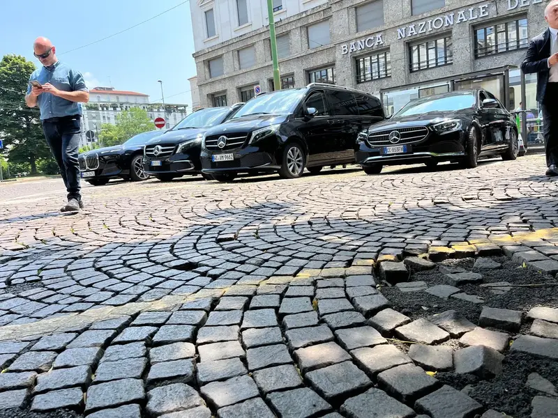

Chauffeur Prive Val-d'Oise 95
Navette aeroport sur reservation
Transfert aeroport dans le 95
RESERVATION
CHAUFFEUR PRIVE DANS LE VAL-D'OISE 95

Notre service de chauffeur prive en 95 Val-d'Oise place le confort, la securite et la fiabilite au centre de chacune de nos prestations.
Transfert aeroport, deplacement professionnel, protection par un bodyguard avec ou sans chauffeur, mise a disposition, celebration de mariage ou trajet de tous les jours : nos chauffeurs professionnels vous accompagnent en 95 Val-d'Oise et dans toute l'Ile-de-France.
Recents et entretenus avec soin, nos vehicules s'adaptent a chaque situation et a chaque besoin, que vous vous deplaciez seul, en famille ou en groupe en 95 Val-d'Oise.
TRANSFERT AEROPORT VAL-D'OISE (95)


Au depart du 95 Val-d'Oise, notre chauffeur prive vous emmene a l'aeroport en toute serenite. Ponctualite et confort sont garantis par nos chauffeurs professionnels, pour un trajet elegant et sur jusqu'a votre terminal, que votre vol soit commercial ou prive. Reservez des aujourd'hui pour un depart sans aucun souci.
MISE A DISPOSITION DE CHAUFFEUR EN VAL-D'OISE


Beneficiez d'une mise a disposition sur mesure avec votre chauffeur prive en 95 Val-d'Oise. Pour la duree de votre choix, nos chauffeurs professionnels prennent en charge l'ensemble de vos deplacements. Une prestation haut de gamme, pensee pour les exigences des personnalites publiques, ministres, celebrites et autres figures de renom.
DEPLACEMENTS PROFESSIONNELS DANS LE 95 VAL-D'OISE


Elegance et efficacite : voici ce que nous apportons a vos deplacements professionnels en 95 Val-d'Oise. A bord de vehicules haut de gamme, nos chauffeurs chevronnes vous offrent ponctualite, discretion et confort. Reunions, visites chez vos clients ou transferts vers l'aeroport, chacune de vos exigences est traitee avec le plus grand soin.
CHAUFFEUR SEC DANS LE VAL-D'OISE


Un chauffeur personnel peut aussi prendre le volant de votre propre vehicule en 95 Val-d'Oise. Experimentes et professionnels, nos chauffeurs vous offrent une prestation de qualite pour vos trajets de tous les jours comme pour vos evenements particuliers.
BODYGUARD AVEC OU SANS CHAUFFEUR - 95


Avec ou sans chauffeur, nos prestations de bodyguard vous apportent une protection professionnelle et discrete en 95 Val-d'Oise. Pendant vos deplacements, pour une mission privee ou professionnelle, nos agents experimentes veillent sur votre securite et votre tranquillite.
CHAUFFEUR DE MARIAGE EN VAL-D'OISE 95


Pour une journee de mariage dont vous vous souviendrez longtemps, choisissez notre voiture de mariage avec chauffeur en 95 Val-d'Oise. Aimables, professionnels et experimentes, nos chauffeurs vous conduisent avec elegance pour que vous puissiez profiter pleinement de chaque instant de la fete.
MAXIME, VOTRE CHAUFFEUR DANS LE 95
Fort d'une solide experience, Maxime Demarly vous offre en 95 Val-d'Oise un service de transport de luxe sans equivalent. Professionnel, discret et minutieux, il rend chacun de vos trajets confortable et sur. Toujours courtois et implique, il repond aux attentes particulieres de chaque passager pour un voyage paisible et plaisant.
UNE EXPERIENCE RECONNUE
Depuis le 6 avril 2017, date de creation de notre societe, nous avons collabore avec des entreprises de premier plan : ArianeGroup, BabyCabs, Evendis, CCCAB, Grande Remise Location, ADS Transport VIP, Private Limousine Services, Avantage Limousine Services et Cardel Group. Travailler pour une clientele aussi exigeante demontre notre fiabilite et notre savoir-faire. Nos vehicules beneficient des dernieres technologies de securite et de confort, et notre service, souple et accessible 24h/24 et 7j/7, est concu pour satisfaire les demandes les plus exigeantes.
LES VEHICULES DE NOTRE FLOTTE

Sieges ergonomiques, finitions de grande qualite, habitacle vaste et silencieux : la Mercedes Classe E conjugue style et bien-etre pour un trajet apaise. Ses fonctions modernes de connectivite et de securite rendent chaque deplacement agreable et sophistique.

La Mercedes Classe S represente le sommet du luxe automobile, avec un interieur ample et somptueux. Ses sieges en cuir massants, dotes de reglages avances, et son espace genereux offrent un confort exceptionnel, tandis que ses innovations technologiques et de securite en font la voiture ideale pour un voyage prestigieux.

Pour voyager a plusieurs, la Mercedes Classe V propose jusqu'a huit places assises dans un confort remarquable. Ses sieges en cuir ergonomiques, son habitacle modulable et son excellente isolation phonique rendent le trajet paisible pour chacun. Connectivite et securite de derniere generation en font un vehicule a la fois luxueux et pratique, parfait pour les familles et les professionnels.

Grand et pratique, le Mercedes Sprinter accueille de 3 a 20 passagers dans de tres bonnes conditions, y compris les voyageurs en chaise roulante, grace a des amenagements specifiques. Son vaste interieur insonorise favorise un trajet tranquille, et ses technologies de connectivite et de securite dernier cri le destinent aux entreprises comme aux transports collectifs. Notre societe detient en outre l'agrement TPMR (Transport de Personnes a Mobilite Reduite).